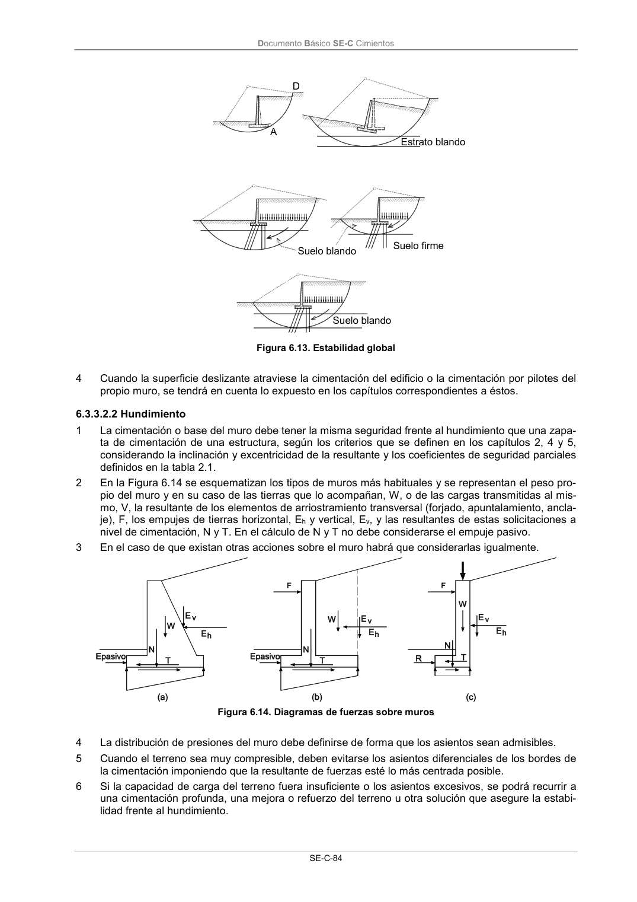

DB-SE-C · 6.3.3.2.2 Hundimiento · versión 2019-12-20
SHA256: a71133f4b0dca253e45ea3071c70f2a512354bcc5cd841bf89b1a502f567ac5e · página física 89 de 165 · métodos de encabezado
solo si están cotejados.
Formatos: Markdown · JSON de bloques · PDF p. 89 · imagen PNG
Documento Básico SE-C Cimientos SE-C-84 Suelo blando A D Estrato blando Suelo firme Suelo blando Figura 6.13. Estabilidad global 4 Cuando la superficie deslizante atraviese la cimentación del edificio o la cimentación por pilotes del propio muro, se tendrá en cuenta lo expuesto en los capítulos correspondientes a éstos. 6.3.3.2.2 Hundimiento 1 La cimentación o base del muro debe tener la misma seguridad frente al hundimiento que una zapa- ta de cimentación de una estructura, según los criterios que se definen en los capítulos 2, 4 y 5, considerando la inclinación y excentricidad de la resultante y los coeficientes de seguridad parciales definidos en la tabla 2.1. 2 En la Figura 6.14 se esquematizan los tipos de muros más habituales y se representan el peso pro- pio del muro y en su caso de las tierras que lo acompañan, W, o de las cargas transmitidas al mis- mo, V, la resultante de los elementos de arriostramiento transversal (forjado, apuntalamiento, ancla- je), F, los empujes de tierras horizontal, Eh y vertical, Ev, y las resultantes de estas solicitaciones a nivel de cimentación, N y T. En el cálculo de N y T no debe considerarse el empuje pasivo. 3 En el caso de que existan otras acciones sobre el muro habrá que considerarlas igualmente. Figura 6.14. Diagramas de fuerzas sobre muros 4 La distribución de presiones del muro debe definirse de forma que los asientos sean admisibles. 5 Cuando el terreno sea muy compresible, deben evitarse los asientos diferenciales de los bordes de la cimentación imponiendo que la resultante de fuerzas esté lo más centrada posible. 6 Si la capacidad de carga del terreno fuera insuficiente o los asientos excesivos, se podrá recurrir a una cimentación profunda, una mejora o refuerzo del terreno u otra solución que asegure la estabi- lidad frente al hundimiento.
